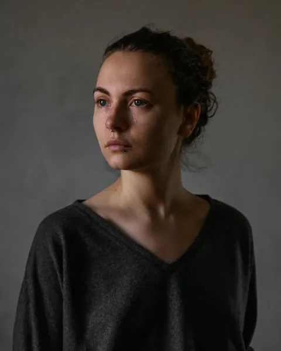
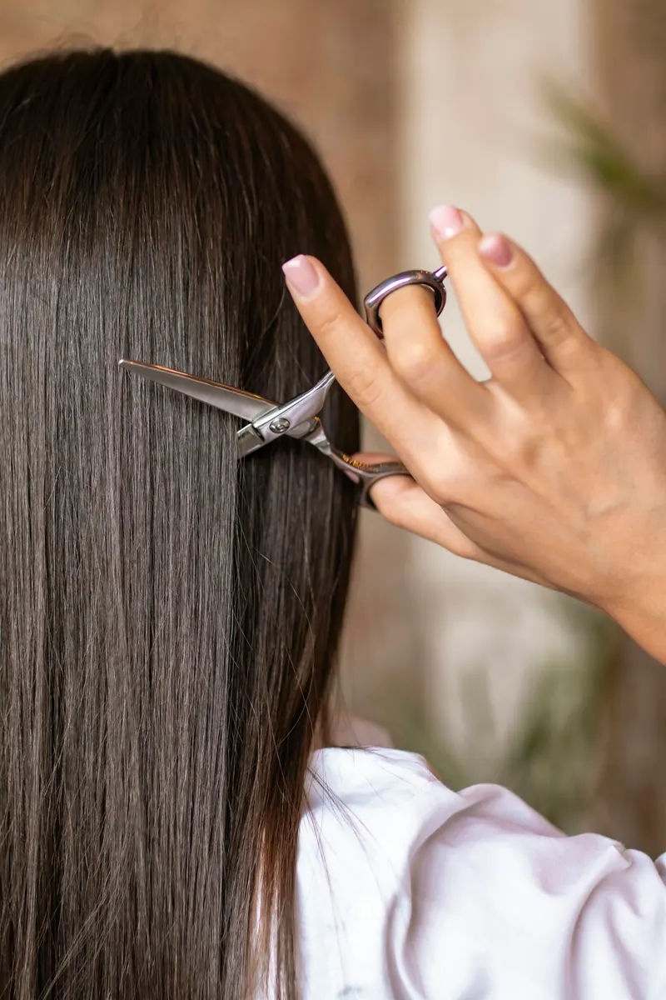
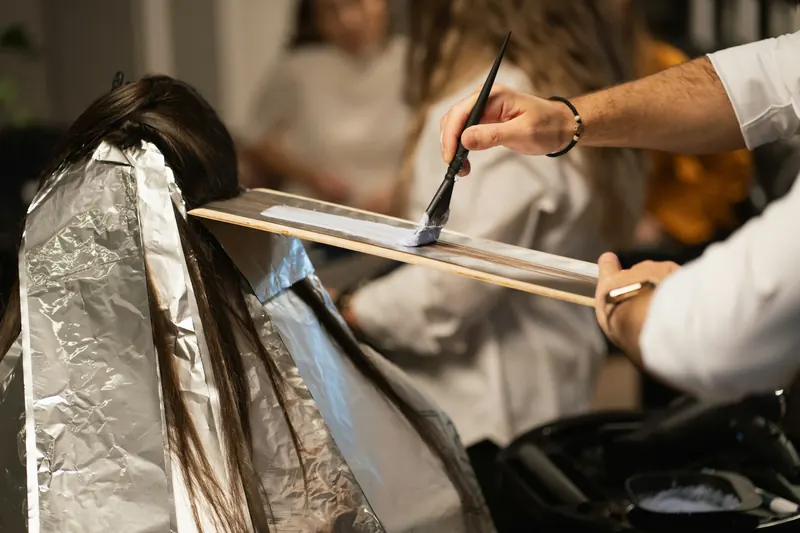
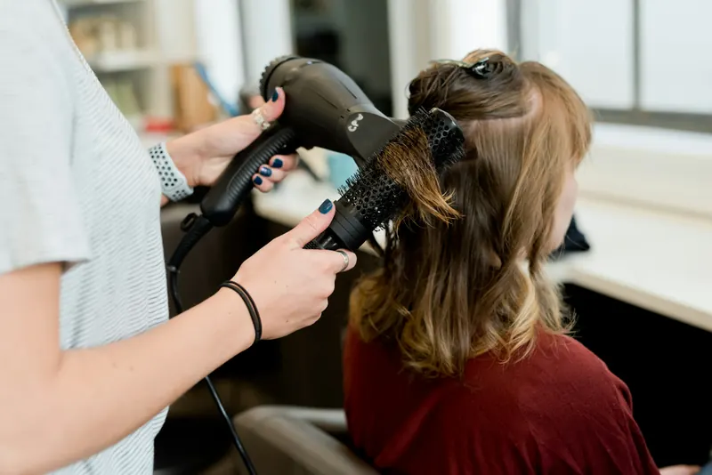
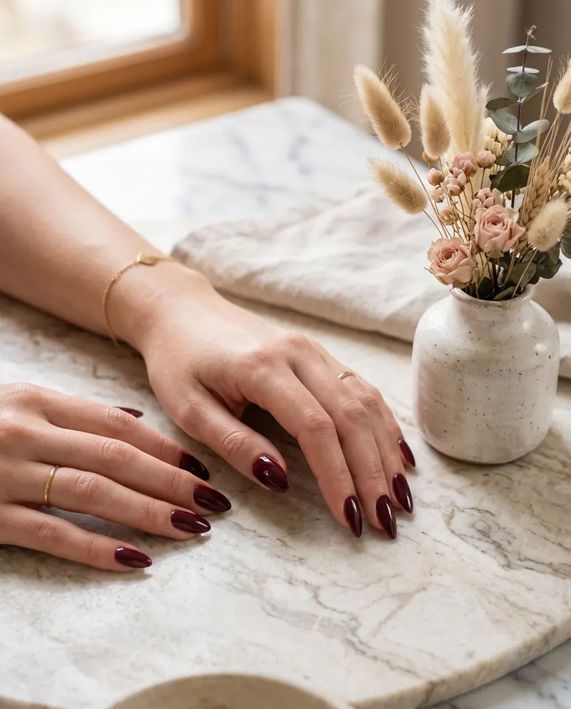
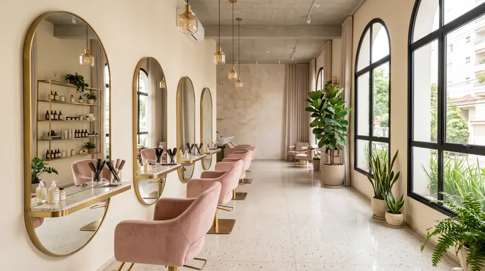

BASE6.1
HIGHLIGHTS8.0
We analyze your hair under the microscope before cutting, coloring or treating it. Predictable results, from diagnosis to mirror.
Digital hair diagnosis
Every appointment starts with the lens. The plan comes from what it shows in your hair, not from a guess.
01 · Consultation

Clara Mendonça Trichologist anamnese02 · Trichoscopy
Sample reading
03 · Protocol
04 · Follow-up
61%
94%
+33
64%
82%
+18
Hydration Elasticity
Routine, chemical history and concerns. What the mirror doesn't show, we ask.
A 60x lens on the scalp and the hair. Density, thickness and cuticle become numbers.
A tailored plan, with the products, the steps and the time for each one.
A new reading at every visit. Progress shows on screen, not just in the mirror.
Six services, one method. Diagnosis first, then the scissors, the color or the treatment. Price and time show up before you book.
Every card has a real control. Try it.

A cut designed for your face shape and hair texture.

Sunkissed brunette, blondes, reds and gray coverage with a recorded formula.
94%
+33 points in the protocol
A protocol built from the hair and scalp diagnosis.

Styled blowouts, waves and updos for events and brides.

Manicure, gel polish and a spa with deep hydration.
Event makeup, brow design and lash lift.
Pick a shade and see the formula we'll use: level, tone, chair time and price. No surprises in the mirror.
The whole page takes on the chosen shade.

Booking opens with color and the shade already selected.
1.284 reviews on Google
Google average from clients who had a diagnosis, color, cut and treatment here. They tell the rest themselves.
Three specialists, one shared profile. Each one takes care of the part of your hair she masters, with the diagnosis in hand.
34anos in the salon, combined
In the HALO Club, blowouts, treatments and diagnosis are already in your monthly schedule. You just pick the time.
No commitment on the monthly plan. Sample prices.
Pick the service, the stylist and the time. The message comes ready in your WhatsApp and reception confirms it there.

Hours below
1200 Example Ave, suite 3 Downtown
Reference duration and price. The final price comes from the diagnosis.
Each stylist has her own schedule. No preference shows more times.
Next 10 open days.
Tap Change to swap any item.
Write your name so reception knows who you are.
Nothing is sent by this page: the message opens ready in your WhatsApp.
What people ask most at reception, answered without fine print.
Still have a question? The team replies on WhatsApp, Tuesday to Saturday.
Ask on WhatsAppA magnifying lens shows your hair and scalp on screen, and you follow everything together with the stylist. It takes about 20 minutes. On your first visit it's included with any service. In the Signature club, it's repeated every 60 days.
See how the diagnosis worksIt depends on the technique: about 2h for a glossy brown and up to 5h for an icy platinum. The formula is recorded in your profile, so the touch-up repeats the same color.
Try on a shadeYes. Let us know on WhatsApp 24 hours in advance and we'll find another time, at no cost. At the last minute, we'll try to fit you in the same week.
PIX, debit card, credit card and cash. Color and bridal packages can be paid in installments on a credit card.
Not on the monthly plan: you cancel whenever you want, with 30 days' notice. On the 6-month plan, the 12% discount applies for the six months you signed up for.
See the plansYes. We do the bride's day at the salon or at the ceremony venue, with a hair and makeup trial beforehand. Bridal bookings open up to 12 months in advance.